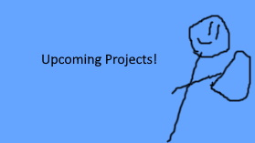
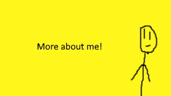

Welcome!


Welcome to the Alpha version of the Makerboi88 Website!
What to expect in this version.
- A shell of what's to come.
- A few links and sections.
- A bit of Pictures.
- Some info.
- Missing parts.
Facts and Trivia.
Facts
- I am 14 years of age. Don't worry, I have parental permission to run my YouTube Channel.
- I won't be sharing my real name for quite some time.
- My favorite food is Bacon.
- I am Male
- I am very good with technology, and decent with many Programming Languages.
Trivia
- You can find me on Scratch.mit.edu
- I originally had the alias Gamerboi67, it was going to be my long term name until I came up with "Makerboi88" while playing Super Mario Maker 2.
- I've always been great at designing stickmen, which is why my animations and channel icon, and even my banner have stickmen in a better quality than the rest.
- I have been diagnosed with AD-HD, Autisim, and Anxeity.
Links to stuff I enjoy, use, or a profile of mine.
More links to come.
Upcoming Videos
These are placeholder images